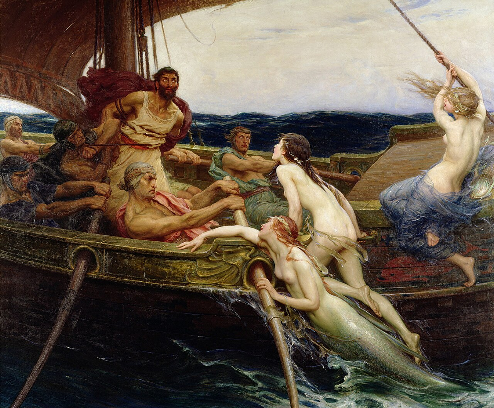

Гомер
«Одиссея» и «Илиада» — краткий разбор по песням
Две поэмы, приписываемые Гомеру (ок. VIII в. до н. э.), — разбор каждой песни и полный текст в классическом русском переводе. «Илиада» — о гневе Ахиллеса на десятом году осады Трои; «Одиссея» — о десятилетнем возвращении домой после её падения.

Одиссея Гомера
Возвращение домой после Троянской войны: десять лет странствий, киклоп и Цирцея, царство мёртвых, сирены — и расправа над женихами на Итаке.

Илиада Гомера
Пятьдесят дней десятого года осады Трои: гнев Ахиллеса, гибель Патрокла и Гектора — и старик Приам, целующий руки убийцы сына.